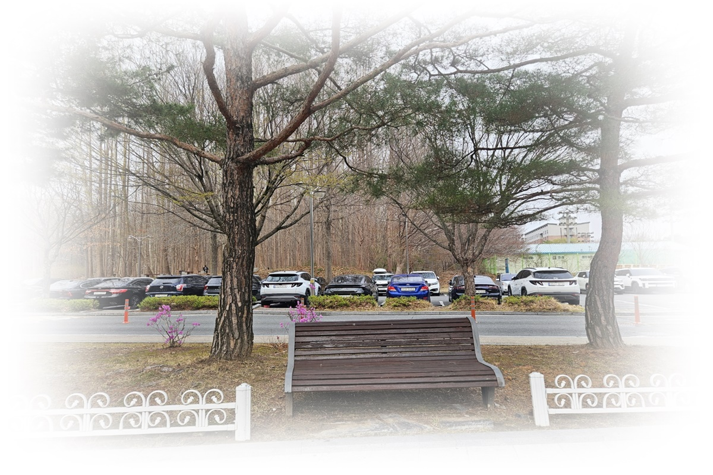

1. 수면제 사용과 심리적 통합 전략: 약물적 수면과 정서 회복의 이중 구조
현대 사회에서 불안과 스트레스는 수면 패턴에 직접적인 영향을 미치며, 많은 사람들이 이를 완화하기 위해 수면제와 같은 약물적 개입을 사용한다. 수면제는 단기적으로 잠을 유도하고 야간 각성을 억제하는 효과가 있어, 즉각적인 수면 회복에는 일정한 도움을 준다. 그러나 이러한 약물적 접근은 근본적으로 내적 불안과 정서적 갈등을 해결하지 못한다.
수면제 사용자는 잠든 몸과 깨어 있는 감정 사이의 불일치를 경험하며, 깊은 회복감이 부족한 상태로 깨어나는 밤을 반복하게 된다. 이는 수면 자체가 신체적 휴식을 제공하지만, 심리적·정서적 긴장 해소에는 제한적임을 보여준다. 본 글은 브런치북( https://brunch.co.kr/@205593d149c84b6/3) 『감정도 잠이 필요하다』 3부 3장 약물 의존적 수면 관리의 한계와 심리적 접근 전략, 비약물적 통합 방안, 회복 전략을 심리학적·임상적 관점에서 분석하고자 한다.

2. 수면제와 감정의 불일치
수면제는 잠을 붙잡는 역할을 하며, 신체적 각성은 일시적으로 억제되지만, 내적 불안과 정서적 갈등은 그대로 남아 있다. 잠자리가 회복의 장소로 기능하지 못하고, 낮 동안 누적된 정서적 긴장은 다음 날에도 영향을 미친다. 이러한 현상은 수면제 사용자가 반복적으로 경험하는 불일치로, 수면제는 잠을 ‘유지’할 뿐, 내적 긴장의 구조적 해결책이 될 수 없음을 보여준다. 즉, 수면제는 물리적 수면 상태를 확보하지만, 정서적 회복과 심리적 안정을 위한 근본적인 수단은 되지 못한다.
수면제의 효과가 제한적인 이유는 뇌와 정서의 자연적 처리 과정을 억제하기 때문이다.
수면 중 뇌는 낮 동안 경험한 감정과 사건을 통합하고 정서적 긴장을 조절하는 과정을 수행한다. 그러나 약물에 의한 수면은 이러한 과정이 제한되며, 깊은 회복수면(Deep Sleep, Slow Wave Sleep)과 REM 수면이 감소하게 된다. 결과적으로, 잠든 몸은 회복하더라도 감정적·심리적 긴장은 여전히 깨어 있는 상태로 남는다.
3. 약물 의존적 수면 관리의 한계와 심리적 접근
약물 의존적 수면 관리에는 다음과 같은 한계가 존재한다.
1) 수면 질 저하: 수면제는 수면 단계의 정상적 순서를 왜곡하며, 깊은 회복수면과 REM 수면을 감소시킨다.
2) 정서적 처리 부재: 잠자는 동안 감정을 처리하는 자연적 뇌 기능이 제한되며, 내적 갈등이 해소되지 않는다.
3) 심리적 의존성: 장기적으로 수면제 의존은 자기 주도적 수면 회복 능력을 약화시킨다.
상담적 접근에서는 이러한 한계를 극복하기 위해, 비약물적 전략과 병행하여 내담자가 자신의 정서적 불안을 인식하고 안전하게 외부화하도록 돕는다. 즉, 잠을 단순한 신체적 회복 상태로만 보지 않고, 감정적 회복을 포함하는 통합적 과정으로 접근한다.
4. 비약물적 통합 전략
1) 마음챙김 훈련(Mindfulness Training)
• 수면 전 긴장을 완화하고, 현재 몸과 감정 상태를 관찰하도록 돕는다.
• 내담자가 잠자리에서도 자신의 감정을 안전하게 인식할 수 있는 능력을 강화한다.
2) 심상 훈련(Imagery Practice)
• 안정적 장면과 긍정적 기억을 시각화하여 불안과 각성을 감소시킨다.
• 내적 긴장과 수면 간 연결성을 회복한다.
3) 수면 위생 개선(Sleep Hygiene)
• 규칙적인 취침·기상 시간 유지, 침실 환경 조성한다.
• 낮 활동 관리 등을 통해 신체 리듬을 안정화한다.
4) 정서 코칭(Emotion Coaching)
• 내담자가 불안과 긴장을 언어화하고 안전하게 표현하도록 지도한다.
• 잠든 상태에서도 정서적 경험을 조율하고 통합할 수 있도록 돕는다.
장기적으로 상담자는 내담자가 수면제에 의존하지 않고도, 신체와 정서를 통합적으로 조율하도록 지원해야 한다. 이를 통해 몸과 마음이 동시에 안정된 상태로 잠들고, 정서적 회복력 또한 장기적으로 강화된다.
5. 수면제 사용의 한계와 회복 전략
수면제는 잠을 붙잡을 수 있으나, 불안과 정서적 긴장을 해결하지 못한다. 따라서 상담자는 내담자가 수면 중에도 자신의 감정을 안전하게 경험하고 정리할 수 있는 전략을 제공해야 한다.
1) 자율적 수면 회복 목표: 약물 의존에서 벗어나 스스로 수면을 조절할 수 있도록 돕는다.
2) 통합적 관찰: 신체적 리듬, 정서적 상태, 인지적 패턴을 종합적으로 관찰한다.
3) 안전한 환경 제공: 내담자가 스스로 수면과 정서를 조율할 수 있는 환경과 전략을 구축한다.
“수면제는 몸을 잠들게 할 수 있으나, 마음의 긴장과 불안은 여전히 깨어 있다.
상담은 이 깨어 있는 감정을 안전하게 다루며, 스스로 회복할 수 있는 길을 안내한다.”
마무리
약물적 수면은 단기적으로 신체적 휴식을 제공하지만, 정서적 불안과 내적 갈등을 근본적으로 해결하지 못한다. 상담자는 수면제를 보조적 도구로 활용하되, 내담자가 잠자리에서도 감정을 안전하게 경험하고 통합하도록 돕는 비약물적 전략을 병행해야 한다. 마음챙김, 심상 훈련, 수면 위생 개선, 정서 코칭 등의 통합적 접근을 통해, 잠든 몸과 깨어 있는 감정 사이의 불일치를 줄이고, 장기적인 정서 회복과 자기 조절 능력을 강화할 수 있다.
이 과정에서 상담자는 내담자의 신체적·정서적 상태를 면밀히 관찰하고, 수면과 감정 회복을 통합적으로 지원하는 환경과 전략을 제공해야 한다. 약물 의존에서 벗어난 자율적 수면 회복은 심리적 통합과 정서적 회복력 강화를 위한 핵심 목표로 설정된다.
참고문헌
Drake, C. L., Roehrs, T., & Roth, T. (2004). Insomnia causes, consequences, and therapeutics: An overview.Journal of Clinical Sleep Medicine, 1(3), 233–245.
권승희 (2017). 정서코칭과 심리상담: 수면과 감정 통합 전략.서울: 학지사.
Walker, M. (2017). Why We Sleep: The New Science of Sleep and Dreams.Scribner.
Harvey, A. G. (2002). A cognitive model of insomnia.Behavior Research and Therapy, 40(8), 873–893.
Buysse, D. J., & Reynolds, C. F. (2006). Sleep disorders in adults: Clinical assessment and management.Current Psychiatry Reports, 8(2), 121–126.
2026.03.11 - [감정도 잠이 필요하다] - 이혼과 불면(1) : 상실이 몸과 마음의 리듬에 혼란 증가
이혼과 불면(1) : 상실이 몸과 마음의 리듬에 혼란 증가
1. 이혼과 수면의 연결 이혼은 단순한 관계의 종료가 아니다. 이혼에는 개인의 삶의 구조, 정서적 안정 및 일상 리듬까지 뒤흔드는 중대한 사건이다. 잠들기 전 이혼 과정에서 자신이 충분히 하
think-sis.co.kr
2025.12.18 - [감정도 잠이 필요하다] - 수면 불안의 정서적 기제와 내면 반응의 이해(4)
수면 불안의 정서적 기제와 내면 반응의 이해(4)
수면은 신체 회복뿐 아니라 정서 조절과 인지적 통합을 담당하는 핵심 과정이다. 많은 성인은 밤이 되면 낮 동안 미처 처리하지 못한 감정과 생각이 고요한 환경 속에서 선명해지며 쉽게 잠들지
think-sis.co.kr